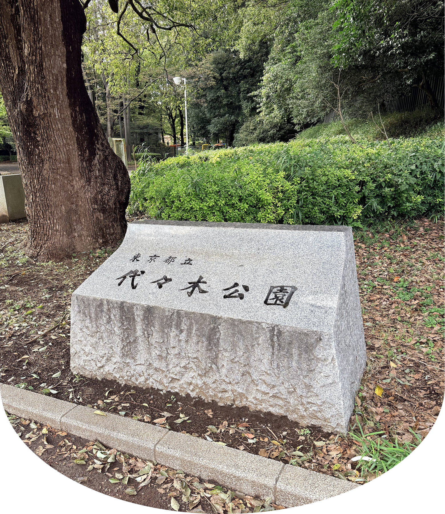
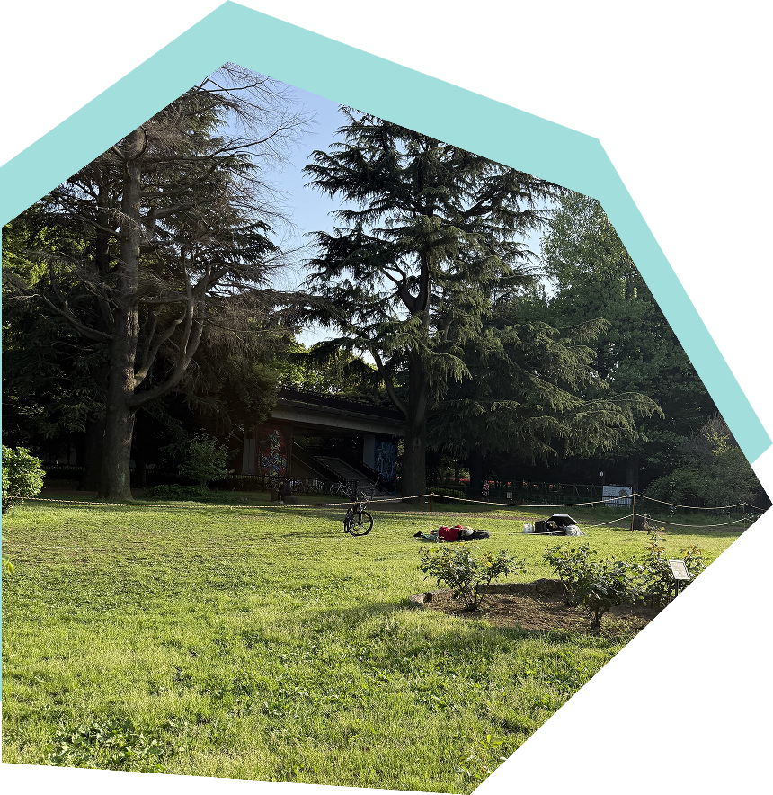
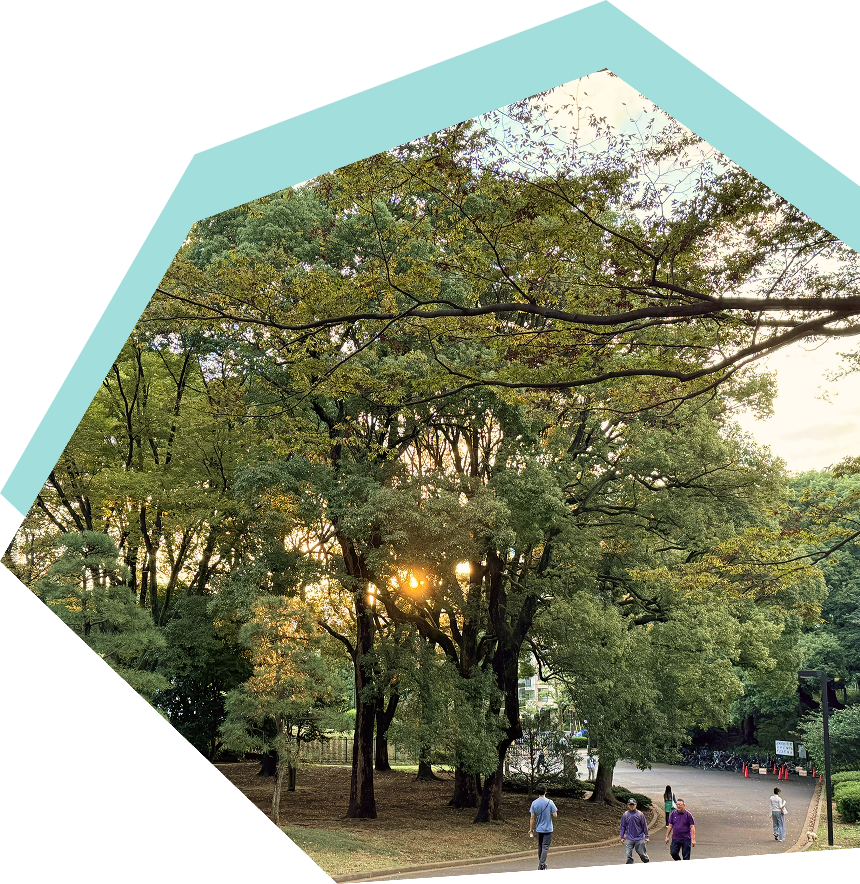
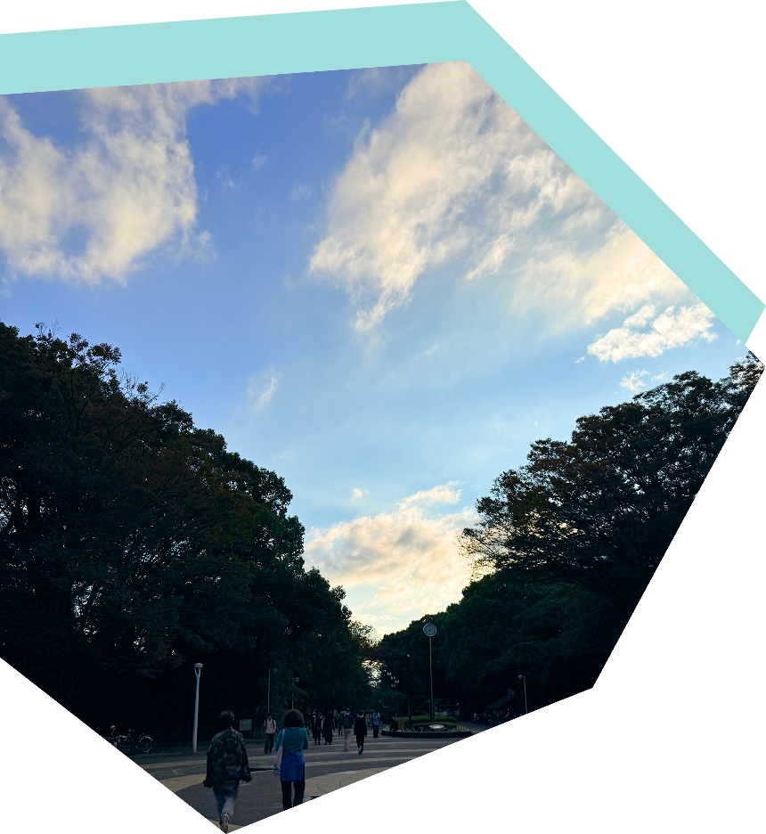

代々木公園へ、ようこそ。
代々木公園って？
原宿や渋谷からほど近い場所にありながら、
広い芝生やたくさんの木々に囲まれた代々木公園。
園内では、散歩やピクニックを楽しんだり、ベンチでひと休みしたりと、それぞれのペースでゆったりとした時間を過ごすことができます。
都会にいながら、気軽に自然を感じられるのが代々木公園の魅力です。
01｜広い芝生

02｜たくさんの緑

03｜開放的な空

HISTORY
今につながる、代々木公園の歴史
現在はたくさんの人が自然を楽しむ代々木公園ですが、この場所は時代とともにさまざまな役割を担ってきました。
-
1910｜代々木練兵場
現在の代々木公園周辺には、かつて陸軍の代々木練兵場がありました。
その後、この場所は時代とともに大きく姿を変えていきます。 -
1946｜ワシントンハイツ
戦後、この一帯には米軍関係者のための住宅施設「ワシントンハイツ」が建設されました。
-
1964｜東京オリンピック
1964年の東京オリンピックでは、ワシントンハイツの跡地の一部が選手村として利用されました。
-
1967｜代々木公園 OPEN
オリンピック終了後に整備が進められ、1967年に代々木公園として開園。
現在では、都会の中で自然を楽しめる場所として、多くの人に親しまれています。
HELLO! YOYOGI